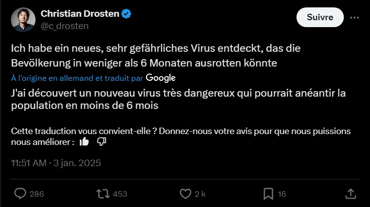
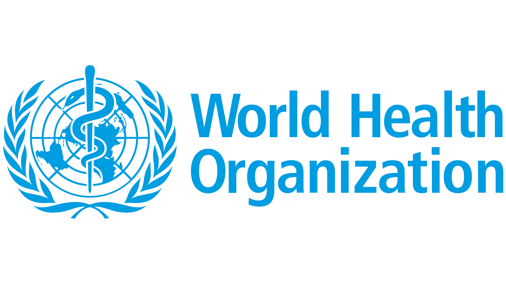

UN NOUVEAU VIRUS TRÈS DANGEREUX !
Publié le 5 janvier 2025
Un nouveau virus inquiétant découvert par le Dr Drosten : une menace à surveiller de près Une découverte scientifique qui fait frissonner le monde médical. Le Dr Christian Drosten, virologue de renommée internationale, a récemment identifié un nouveau virus potentiellement très dangereux. Ce pathogène, encore peu connu, pourrait représenter une menace pour la santé publique mondiale. Alors que les premières investigations sont en cours, les experts appellent déjà à une vigilance accrue et à une mobilisation internationale pour comprendre et contrer ce nouvel adversaire invisible.
La découverte d'un virus potentiellement dangereux, réalisée par le Dr Christian Drosten, a rapidement fait l'objet de l'attention des médias. Ce soir, la chaîne d'information continue BFM TV a diffusé un reportage détaillant cette trouvaille alarmante. Le Dr Drosten, virologue de renommée internationale, met en garde contre les risques de propagation de ce virus encore méconnu. BFM TV a consacré une large part de son journal pour décrypter cette découverte et les implications possibles pour la santé publique mondiale. Les experts soulignent l'importance d'une surveillance accrue et d'une coopération internationale pour mieux comprendre et endiguer ce nouveau danger. Pour en savoir plus sur cette situation qui pourrait bouleverser l'actualité sanitaire mondiale, vous pouvez retrouver l'intégralité du reportage sur le site de BFM TV.

L'OMS alertée après la découverte d’un nouveau virus dangereux par le Dr Drosten
La découverte récente d’un virus potentiellement très dangereux par le Dr Christian Drosten n’a pas tardé à attirer l’attention des autorités sanitaires internationales. L'Organisation Mondiale de la Santé (OMS) a été rapidement informée de cette découverte et suit de près l’évolution de la situation. Dans un communiqué préliminaire, l’OMS a exprimé sa vigilance face à cette menace émergente, soulignant la nécessité de rassembler des données scientifiques pour évaluer les risques de ce nouveau virus. Les experts travaillent d’ores et déjà en collaboration avec le laboratoire du Dr Drosten et d’autres institutions de santé publique à travers le monde pour analyser les premiers échantillons et déterminer les mesures à prendre. "Nous appelons à une coopération internationale immédiate afin de mieux comprendre la nature de ce virus, son mode de transmission et les éventuelles mesures de prévention à adopter", a déclaré un porte-parole de l’OMS. Alors que l’OMS évalue la situation, le monde médical s’organise pour anticiper toute propagation et coordonner une réponse rapide en cas d’urgence sanitaire.
